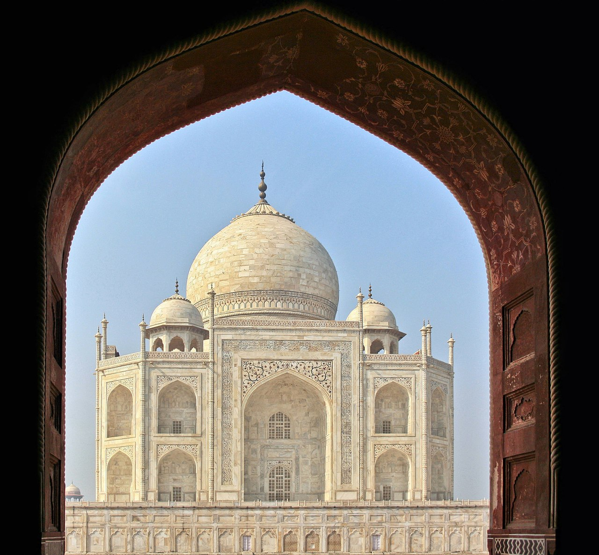
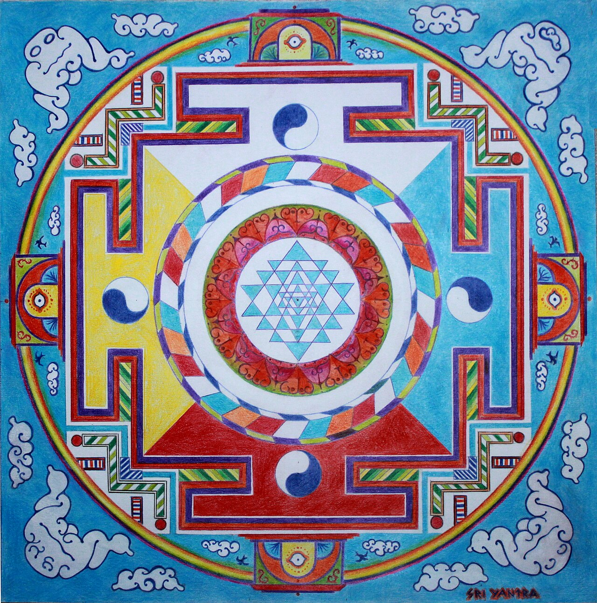

🏆 Meesterwerk: Ajanta Grotten Fresco's (5e - 6e eeuw)
Meesterwerken van boeddhistische verhalen - indrukwekkende muurschilderingen in rotsen

Boeddhistische monasteren · Maharashtra, India · Fresco, klei op steen
🎨 STIJLFIGUREN & THEMA'S
🙏 Boeddhisme & Hindoeïsme
Religieuze kunst: Goden, godinnen, heiligen, boeddha's. Spirituele vertellingen.
👑 Koninklijke Kunst
Padenavastra: Koninklijke beelden van Chola, Pallava. Majestueus en stijlvol.
🏛️ Tempelarchitectuur
Shikhara: Torenvormige tempels, gopurams (Zuid-India). Gevormde architectuur.
✨ Miniaturen
Rangoli: Handgemaakte vloermotieven. Rajasthani miniaturen, Pahari.
📚 TIJDSGEEST CONTEXT
🌍 POLITIEK PERSPECTIEF
PLACEHOLDER - Te expanden naar 500+ woorden
📖 LITERAIR PERSPECTIEF
PLACEHOLDER - Te expanden naar 500+ woorden
🧠 PSYCHOLOGISCH PERSPECTIEF
PLACEHOLDER - Te expanden naar 500+ woorden
🏛️ HISTORISCH PERSPECTIEF
PLACEHOLDER - Te expanden naar 500+ woorden
💭 FILOSOFISCH PERSPECTIEF
PLACEHOLDER - Te expanden naar 500+ woorden
🖼️ TOP 10 MEESTERWERKEN
1. Ajanta Grotten Fresco's (5e - 6e eeuw)
Boeddhistische Monasteren · Maharashtra, India · Fresco, klei op steen
Achtergrond: De Ajanta grotten bevatten 30 boeddhistische tempels met indrukwekkende fresco's die het leven van de boeddha en verhalen uit de Jataka's vertellen.
🔍 STIJLANALYSE
Techniek: Fresco - klei op natte muur, zonnedroogend.
Compositie: Dynamische beweging, verhalende sequenties.
Betekenis: Een van de grootste collecties van oude Indiase kunst.
2. Khajuraho Tempels (950 - 1050)
Chandela Dynastie · Kalksteen · Madhya Pradesh, India

Achtergrond: De Khajuraho tempels zijn beroemd om hun elegante erotische sculpturen - zowel van kunstzinnige kwaliteit als erotische verwachting.
🔍 STIJLANALYSE
Kunst: Versierd met lichamelijke taferelen, dansers, dieren, goden.
Symboliek: Het bindt tempelkunst met sensualiteit en levensvreugde.
Functie: Literatuur en spirituele symboliek, geen pornografie.
3. Koninklijke Standbeeld van Ganga Devi (12e eeuw)
Hoysala Dynastie · Kalksteen · Karnataka, India

Achtergrond: Dit prachtige standbeeld toont de godin Ganga (de Ganges) op een elefant, met haar zuster Yamuna op een ander dier.
🔍 STIJLANALYSE
Detail: Meer dan 500 tonen gewicht, versterkte voetbasis.
Stijl: Hoysala stijl - complex reliefwerk, delicate trekken.
Positie: Grootste cultusbeeld van Karnataka.
4. Elefantastempel (Hoysaleswara) (12e eeuw)
Hoysala Dynastie · Kalksteen · Karnataka, India

Achtergrond: De tempel is gebouwd als ode aan de Hoysala koninklijke dynastie, met talloze mythologische sculpturen.
🔍 STIJLANALYSE
Structuur: Poligonaal opgebouwd uit 24 honderden specifieke polijste steensoorten.
Scènes: Uitgelijnde religieuze teksten, 1500+ standbeelden.
Architectuur: 16 mischellijnen, gebeeldhouwde planken.
5. Taj Mahal (1632 - 1653)
Mogol · Marmer · Agra, India

Achtergrond: Het mausoleum van Shah Jahan voor zijn vrouw Mumtaz Mahal - een icoon van liefde en architectuur.
🔍 STIJLANALYSE
Architectuur: Perfecte symmetrie, marmer met ingebedde edelstenen.
Detail: Ingebedde parels, robijnen, saffieren in het marmer.
Invloed: Islamitische, Perzische, Indiase en Europese stijlen.
6. Ellora Caves (600 - 1000)
Maratha Dynastie · Rotsgravingen · Maharashtra, India

Achtergrond: 12 holte-kerkens (blijven: boeddhistisch), 17 hindoeïstische tempels en 1 joodse synagoge in een lineaire structuur.
🔍 STIJLANALYSE
Techniek: Grote formaten van 300 tonn, grotschilderingen, extreem gedetailleerde architectuur.
Bestaand: De Vishvakarma tempel - de grootste enkele steen op een platform.
Functie: Verken jegelijkzeeker en vrede tussen religies.
7. Koninklijk Basalt Beeld (2e - 3e eeuw)
Maurya Dynastie · Basalt · Bihar, India

Achtergrond: Dit monumentale beeld van Ashoka de Grote wordt vaak geassocieerd met Asoka's koninklijke leiderschap.
🔍 STIJLANALYSE
Stijl: Stijlvolle eenvoud, belangrijke religieuze symboliek voor boeddhisme.
Functie: Reusachtige steengroepen, soms 20-40 meter hoog.
Inspiraat: Directe inspiratie voor China's Yungang en Longmen grotten.
8. Koninklijk Bronzen Beeld (10e - 12e eeuw)
Chola Dynastie · Brons · Tamil Nadu, India

Achtergrond: De Chola's maakten 'klassieke' standbeelden die nog steeds een inspiratiebron vormen voor moderne Indiase kunstenaars.
🔍 STIJLANALYSE
Stijl: Klassieke en expressieve stijl, fijn gedetailleerde sculpturen.
Positie: Grote diversiteit, zowel religieus als koninklijk.
Betekenis: Gevormde Indiase stijl en grote techneuten.
9. Miniaturen (Pahari/Rajasthani) (17e - 19e eeuw)
Indiase Regeringen · Verf, papier · Rajasthan, Himalaya

Achtergrond: De Indiase miniaturen zijn zeer gedetailleerde, kleurrijke afbeeldingen van boeddhistische, hindoeïstische en islamitische verhalen.
🔍 STIJLANALYSE
Detail: Zoals een goudlief, "geen schaduw van een eend" (an-e-sab-zadeh).
Techniek: Pigmenten van planten en mineralen, vlekbestendige koperoxide.
Betekenis: Eerste Indiase mode van kunst en design.
10. Sri Yantra Mandala (Traditioneel)
Tantrische Traditie · Teken/Tekening · Geheel India

Achtergrond: De Sri Yantra is een complexe geometrische mystieke tekening die dient als mantra-visualisatie voor tantrische rituelen.
🔍 STIJLANALYSE
Formaat: Complex concentrisch diagram met negen geassocieerde getallen.
Symboliek: Voorstelling van de kosmische structuur en de godin Tripura Sundari.
Functie: Meditatief visualisatie voor yogi's en mystici.